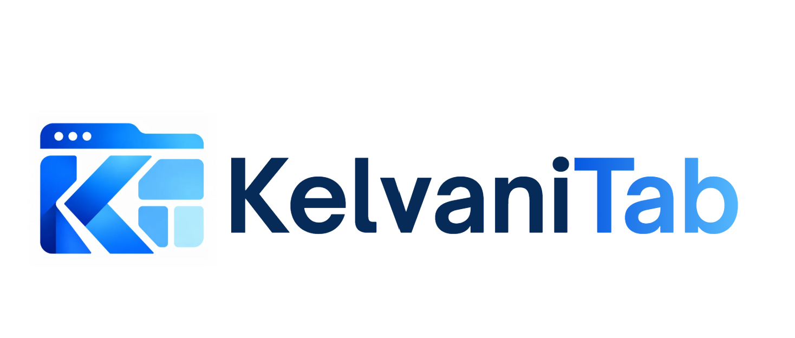

Browser-Vorschau · Als Erweiterung installieren, um die Neuer-Tab-Seite zu ersetzen.
Noch keine Links in dieser Gruppe. Füge deine erste Verknüpfung hinzu.
Beim Entfernen der Erweiterung gehen lokale Daten verloren. Sichere vorher ein Backup.
Dieses Backup ersetzt deine Links, Aufgaben, Notizen und Einstellungen. Abbrechen lässt alles unverändert.
Dein Text bleibt im Notizfeld erhalten. Du kannst den anderen Text kopieren oder bewusst durch deinen ersetzen.